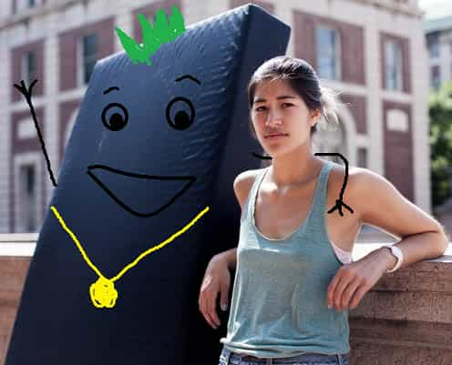

A recent divorce has woken up an aging Jerry Michaels from blue-pill la-la land, and into the world of red pill reality. In light of it all, he finds many reasons to stay positive in a world of discord.


The past year has proven to be a particularly damning one for allegations of sexual assault to surface against many high ranking members of society. Names such as James Franco, Morgan Spurlock, and Charles Dutoit have all appeared in the headlines lately with a variety of claims against them, each of which having a varying degree of basis in reality versus outright slander.
The most recent, and potentially most devastating accusation is against 29-year-old Canadian Dubstep DJ, Datsik. In light of these unproven allegations, Datsik has had his entire tour canceled, was fired from his booking agency, and was even forced to step down from the record label he founded, all within 24 hours of the claims surfacing. Worst of all, it would appear that Datsik’s longtime friend, Bais House, has publicly torched him, siding with his accusers and removing him from their critically acclaimed duo project, Ephwurd.
— Ephwurd (@Ephwurd) March 16, 2018
Datsik initially released a statement on his Facebook page that refuted these allegations but has since made his social media accounts private after being relentlessly lambasted by thousands of fans who have taken up arms against him.
This was in response to an unrelated crowd photo.
In 2012, Datsik remixed a track by fellow Dubstep producer, Destroid, entitled “Annihilate.” Who would have known that it would become a fitting metaphor for his career just six years later.
What is particularly unique about this case is the speed at which Datsik’s career was single-handedly destroyed as well as the nature of the accusations themselves. At this point, it is entirely unclear as to whether or not any statements have been made to law enforcement if Datsik is facing any actual legal trouble, and if any concrete evidence exists showing that a rape took place. Instead, all of these allegations stem from Tweets made by one Twitter user named “mrs. wobble,” who was not assaulted herself.
Mrs. Wobble has posted screenshots of text messages sent from anonymous women that detail stories of the DJ acting inappropriately with underage girls. Allegedly, he would coerce them to use the drug ketamine and drinking alcohol, and supposedly left one fan he had intercourse with on the hood of a vehicle in snowy weather after speeding away in his tour bus like the Joker in Batman.
yall i have to delete my original tweet due to a request for privacy, here it is for the 3rd time! pls RT pic.twitter.com/WHnxXI9ptN
— ms. wobble ➡️➡️spring gathering (@_princesssjay) March 14, 2018
Additionally, multiple girls have forth with claims that Datsik’s manager would hand out backstages passes to particular women that have the word “TUL$A,” on them. This word was chosen so what if these girls are to look in a mirror, they would see that it instead says “A Slut.” Curiously, when a man uses this word, it is no longer a catchphrase of women’s liberation and is instead seen as offensive. Go figure.
— Truman Nolan (@TrumanBassMusic) March 14, 2018
Nobody can deny that, if these allegations are true, Datsik should have a world of legal trouble coming his way. Unfortunately, it is incredibly unclear as to when the typical rockstar DJ party boy behavior ended, and when (or if) the actual wrongdoing began.
Many would immediately claim that these women are lying, or that they should not have gone on a tour bus at 3 AM with a DJ who is notoriously known for being a wild drug abuser and who once produced a song that contained the following lyrics, “Throw your casket bitch. I’m a cold-blooded killer, ho.” Unfortunately for proponents of this way of thinking, that’s not the perspective I’m going to address here.
Instead, let’s take a moment to reflect on just how lowly men are thought of in today’s day and age that a career that has been said to be worth millions of dollars could be destroyed in a 24 hour period based on screenshots of text messages from anonymous women shared from an otherwise unrelated Twitter account. How many steps removed is that from an actual allegation from an individual, let alone one with evidence? This may be the fastest timeframe that a sexual assault allegation has single-handedly ruined someone’s career.
Datsik may be guilty, or he may be innocent. It is ultimately unclear. What is abundantly clear, however, is that false rape accusations do exist. Emma Sulcowitz, otherwise known as “Mattress girl,” the 2006 Duke Lacrosse case, and numerous other cases show that men are often accused of sexual assault as a weapon to be used against them.

In 2012, the Journal of Forensic Psychology used FBI data to determine that up to 5,000 false rape accusations are made in the United States each year. Considering the prevalence of these injustices, how can one take such vague, anonymous statements made via Twitter as admissible evidence? Yes, an investigation should take place, and yet it should be one in which the accused is “innocent until proven guilty.”
Despite the ambiguity of his guilt, a career that took one man over a decade to turn from a passion project he started in his bedroom into a multimillion-dollar enterprise has now been entirely obliterated by baseless accusations alone. He has been denied the due process that he is legally entitled to in both a Canadian and American court of law. Additionally, while someone like Mike Cernovich can quickly recover from a false rape allegation due to the nature of his work, the precedent has been set that anybody who works in show business, the music industry or the creative arts as a whole is but one angry tweetstorm away from having everything taken away from them.
We live in dangerous times, gentlemen. Anybody who is concerned with the welfare of men should be interested to see how this case develops.